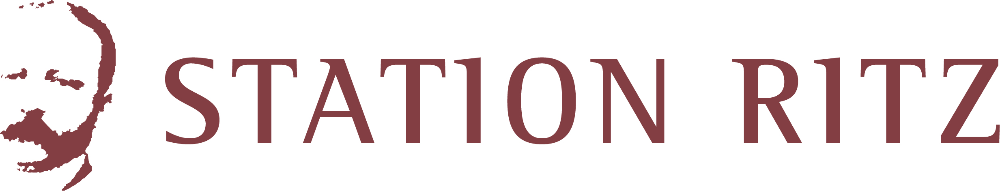

Tour Booking
Experience the historic charm of Niederwald and learn about the life and legacy of world-renowned hotelier Cäsar Ritz. Book your guided tour digitally and dive into a journey through time.
Initial Situation/Problem statement
The Niederwald Visitor Center was established in 2017, transforming the former Niederwald train
station into a tribute to Cäsar Ritz with a permanent exhibition. Additional offerings include a
village tour, a themed walking trail (to be redesigned in 2025), periodic events, and a breakfast
salon in the station’s bistro.
However, organizing tours for guests remains challenging. Requests (for tours with or without a
village walk, in languages such as German, English, French, and Italian) often come by phone or
email, leading to numerous follow-ups to clarify details like date, time, group size, and type.
Finding available and suitable guides is time-intensive, and all guide arrangements and
confirmations are done manually. Feedback collection and invoicing are also manual, leading to
inefficiencies and potential errors.
Project Goal
The goal is to streamline this process with a web application that simplifies requests, making them more transparent and efficient for guests. This platform will ease administrative tasks by automating the guide selection process, invoicing, and feedback collection, reducing the need for manual correspondence. Guides will also benefit from receiving relevant information in a standardized format, enhancing their engagement.
Tour Browser
Here, customers can browse through the available tours and find their perfect match.
Tour Booking Form
Here, customers can fill out the booking form to reserve a spot for their desired tour.
Admin Booking Overview
This is the admin page, providing a comprehensive overview of all bookings, with tools to manage and monitor customer reservations efficiently.
Developed Solution and its benefit
The developed solution is a comprehensive web application that digitizes and automates the tour booking process at the Niederwald Visitor Center. By streamlining requests, scheduling, guide assignment, invoicing, and feedback collection, the application significantly reduces manual effort. This solution simplifies guest interactions and enhances administrative efficiency, benefiting both visitors and guides.
- Streamlined Tour Request Process: Guests can submit tour requests online with all necessary information (date, time, number of participants, group type, and language) in one step, reducing the need for follow-up communication.
- Automated Guide Assignment: The system automatically matches guests with available and suitable guides, saving time and ensuring efficient scheduling.
- Guide Portal: Guides receive relevant information and updates directly through the platform, enhancing communication and making it easy for them to confirm their schedules and receive feedback.
- Multilingual Support: The platform is primarily in German, with translations available in French, English and Italian to accommodate a wider audience.
- User-Friendly Interface for Guests: Guests benefit from an intuitive interface, allowing them to review available tour options and submit requests easily.
These improvements enhance operational efficiency, reduce errors, and provide a smooth, seamless experience for both guests and administrative staff.
Testemonial
«Thanks to the new web application, booking a tour has never been easier! The entire process is quick, clear, and well-structured, making our work much simpler and providing a great experience for our guests.»
Monika Holzegger
Key terms
- UI/UX ToolFigma
- Programming languagesJava, TypeScript
- Backend stackSpring Boot
- Frontend stackNext.js, React
- DatabasePostgreSQL
Costumer

Station Ritz
Furkastrasse 20
3989 Niederwald
www.stationritz.ch
Team

Saskia Bosshard, Tobias Knöpfli, Florian Christ, Jiabin Müller, Manuel Plasvic, Nicolas Staub
Coach
Martin Kropp